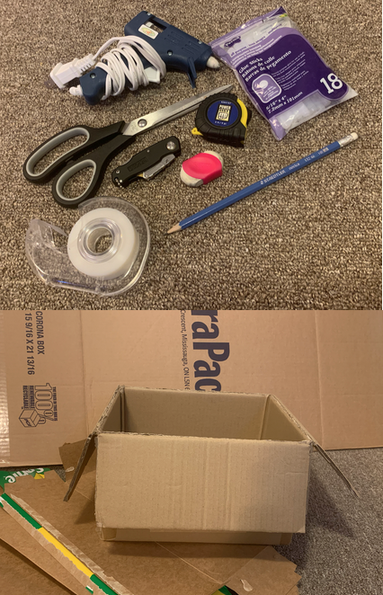
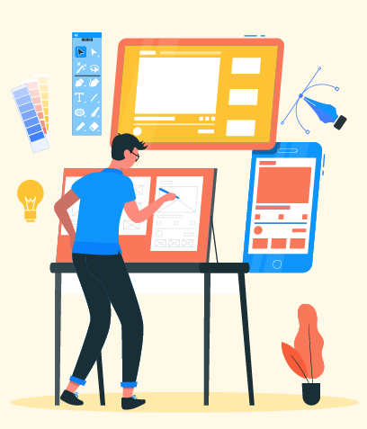

Group Maker Project 1 for Maker Lab (UX 201)
The product we created was the colour box that can help people learn and design with different colours. We wanted a place for many colours to be in the same place at once where you can physically see the colour you are picking. After having to change our initial design ideas we finally came up with a product that is both useful and a learning tool. My group members and I cannot wait and see how this product progresses in the future.
The colour box is a way for people to learn and use colours in a more interactive way. Designers will be able to pick out their colours before designing and people who are learning colours have a hand on experience with the actual colours. We wanted to make something that shows what all the colours look like after printed out since different colours look differently in different lighting. Saves an extra step in the design process, you do not want to print everything out and then change your mind.

After we came up with our idea, we had to begin some basic research. We wanted to figure out which colours were most used in learning and designing. After the research we decided on having the main colours of the rainbow plus the most used shades in-between. We ended up picking just over 130 different colours for the box which we formatted in a word document which we printed out. After it was printed out, we wanted to make the cards durable so they will last longer. For this we used cardboard so the cards can be easily gripped and moved around.
Moving onto the box design we wanted to have everything enclosed in a larger box with smaller boxes on the inside. We found a box that was a perfect size (10 in x 12 in x 7 in) and then did some measurements to figure out how many compartments we could have inside. We ended up being able to have 12 boxes inside which were all made from hot glue, cardboard, and paper. After everything was put together, we combined everything and our project became a useable prototype.
In the end we were all happy with what we created and proud of what we can accomplish when we put our minds together. After this project we learned what its like to work collaboratively in a group starting with an idea and moving towards a product. If we were to continue with this product, I would like to make it out of better materials to ensure that the product will last after being handled a lot. I would also want to conduct some research to see what colours are used more frequently in design so we can expand our colour selection. This project opened my mind about the possibilities that UX involves and how maybe one day I will be a product designer.

In a classroom setting “imaginative and divergent thinking practices... are seen to build student critical thinking skills while developing personality and dispositional traits such as persistence and a critical eye” (McGlashan 2). The colour box is a great way to allow users to be creative and gain their own critical thinking independence while exploring different colours in the box. Receiving these hands-on practices also feeds into a person’s tinkering skills. According to Michael Morgan, when users are tinkering “we can realize what were previously unseen possibilities” (Morgan 3). When people are allowed to tinker and work with objects they can explore and figure out what works best with one another.
The reason I mentioned designing in classrooms is because it is important to teach people about the true colours. In today’s society learning about true colours is important as the colours on a digital screen can be different than when it is printed out. In addition, using tinkering skills are great way to learn and explore to figure what works best with one another. By allowing people to tinker with colours they are able to design and learn easier.
References
- McGlashan, Ann. “A Pedagogic Approach to Enhance Creative Ideation in Classroom Practice.”
International Journal of Technology and Design Education, vol. 28, no. 2, 11 May 2017, pp.
377–393., doi:10.1007/s10798-017-9404-5.
- Morgan, Michael. “UX Research: The Tinkering Mindset.” UXmatters, 29 July 2019,
www.uxmatters.com/mt/archives/2019/07/ux-research-the-tinkering-mindset.php.